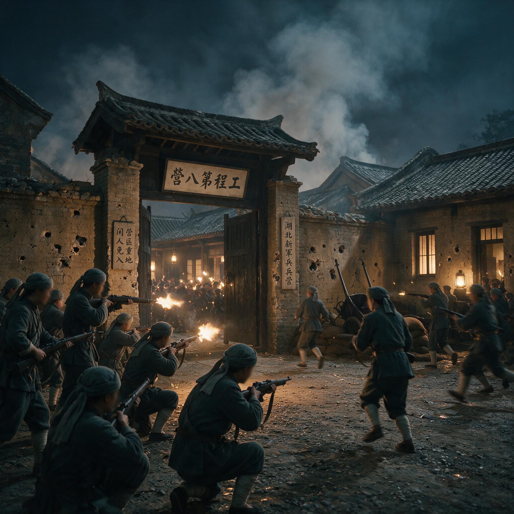

第 12 章
武昌的枪声：导火索的尽头
十月十日晚的武昌，天气已经凉下来。紫阳桥附近的工程第八营营房里，一个值班排长在查铺时突然停住脚步。他听见后队二排的铺位上有轻微的金属碰撞声，铜弹壳从帆布袋里滑出来，滚过木床板，发出

武昌起义历史照片（工程营）
AI 生成插图，非史实影像。
短促而清晰的响动。
排长走上前去，看见两名士兵正借着油灯的光擦拭枪机。枪是湖北枪炮厂造的汉阳式七九步枪，枪栓刚拉出一半，昏黄的光线在退出的弹壳上闪了一下。排长伸手去夺枪。枪托从背后砸在他的后脑勺上。他踉跄着逃出营房，身后一声枪响从室内炸开，弹头穿出窗格，掠过紫阳桥下的水面。
武昌城里的狗开始叫。钟楼上的更夫停住手中的梆子，听见枪声从工程营方向传来，不是巡防营查夜的零星枪响，而是一声接着一声，像谁在黑暗中扯断了什么紧绷的东西。
士兵的扳机一旦扣下，就再没有收回去。这一枪沿着长江向上回溯，要穿过一千公里水路和四十三天时间，才能找到它的引信。引信不在武昌。
引信在成都的督署辕门外，在九月七日的血泊里，在更早的六月股东特别大会上，在一张从川汉铁路公司账房里流出的租股票据上。这条因果链的两端，一头是四川乡间田赋册上无数个默默无闻的名字，另一头是湖北新军工程营里一个二十出头的年轻士兵。他的名字在辛亥革命史上留下了一个位置——程正瀛，湖北鄂城人，工程第八营后队二排正目。
那天晚上，他在黑暗中扣动了扳机。但这并不是另一篇关于“星星之火”的叙述。
星星之火的说法太轻巧，掩盖了一个硬邦邦的事实：程正瀛手中的步枪能装五发子弹，而他所在的工程第八营之所以能在当晚冲出营房、攻占楚望台军械库，是因为武昌城内已经几乎没有足以压制这支起义的野战兵力。这个军事上的空当，是四川保路运动一手造成的。
把这个空当打开的人，此刻正带着一支湖北新军坐在距离成都三百里的资州行辕里，还不知道武昌已经变天。他就是端方。端方在十月十三日前后抵达重庆时，局面已经比他离京时模糊得多。
他署理四川总督的身份，理论上赋予他节制四川文武的权力，但成都平原上的同志军根本不认这道命令。温江、郫县、双流、新都、新津，这些成都周边的州县，每一个地名后面都跟着一份告急文书：驿道中断、场镇被占、县城戒严。成都城本身尚未失陷，但四郊的道路已经不属于官府。
赵尔丰困守督署，巡防军在城内昼夜巡逻，城门白天只开两个时辰，城外运粮食的乡民必须持保甲凭条进出。这样做勉强维持着省城的供应，但也把成都变成一个四面透风的孤岛，每天消耗着不多的存粮和更少的耐心。
端方到重庆后做的第一件事，不是挥师西进。他命令曾广大率领第三十一标主力暂驻重庆至泸州一线，只派小股部队向前搜索。这个部署说明他已经改变了在途中形成的判断。离京时，他倾向于盛宣怀的看法——四川民变是少数绅商煽动，大兵一到，不战自溃。
但船过三峡时，他在万县、涪陵靠岸补给，听到的却是另一番景象。江边码头上，挑夫和船工都在说成都“杀了请愿的人”，说各州县的袍哥都“反了”。
地方州县官见了他，言语间闪烁其词，既不敢说民变不可平，也不敢保证本地团练还听调遣。这种感觉很不好。他带来的鄂军人数不过两千余，放在湖北是一支精锐，放进四川的丘陵与平原之间，却像一瓢水泼进旱田，转眼就渗得无影无踪。十月十三日前后，他在给内阁的奏报中承认，仅靠所带鄂军已难清剿。他建议朝廷采取招抚，释放此前被捕的蒲殿俊、罗纶等人。
这句话的潜台词很清楚：九月七日赵尔丰的“擒贼先擒王”失败了。抓人没有让保路运动停下来，反而把它从股东厅堂推进了祠堂、茶馆和袍哥码头。现在要平息川乱，必须先拆掉那根最有号召力的引信。
端方知道这个建议会招来盛宣怀的强烈反对。在铁路国有这件事上，盛宣怀是始作俑者，也是态度最硬的人。他宁可让赵尔丰继续在成都用铁腕压住省城，也不愿看到朝廷在四川松口。一旦释放蒲殿俊等人，就等于承认铁路国有政策在四川走不通，四国银行团的借款合同也将动摇。这对盛宣怀来说，比四川丢掉几个县城更危险。端方没有在奏稿里写这些。
他把川局归结为“民气激愤，非纯用兵力所能了”，建议“先安人心，再图善后”。这是标准的官场修辞，但放在一个月前，他不会用这种口气说话。八月里，他还在督办川汉、粤汉铁路，对四川股东的要求不以为然。
现在他带着鄂军坐困川东，才意识到盛宣怀和他自己都算错了一件事：四川的铁路股权纠纷，已经从公司账本里溢出来了，漫过省城，漫过州县，最后漫成了一个无论多少兵力都堵不住的缺口。
就在端方在重庆写奏稿的那个晚上，八百公里外的武昌，湖北新军第八镇司令部门前，参谋们在核对调兵令的底稿。这些公文九月中旬开始频繁进出，纸张上盖着湖广总督瑞澂的紫花印。最要紧的一份，是九月十日军谘府转来的电令：着调湖北新军第十六协第三十一标及第三十二标一部，由标统曾广大率领，从武昌拔队，开赴宜昌，再由水路入川，归川汉铁路督办端方节制。三天后，又一道电令加派端方署理四川总督，并命再带部队西进。湖北新军的家底，端方心里有数。
第八镇和驻武昌的第二十一混成协，总计约一万七千人，是长江中游最完整的野战力量。这次入川，第三十一标全标、第三十二标第一营，加上从江苏调驻湖北的第八镇马队第一营，共约三千人。这三千人不是普通的抽丁，而是第十六协的主力。第十六协原承担武昌城防和武汉三镇的机动作战，一旦抽走，城防只能靠两个来源：一是第二十一混成协的留守单位，二是第八镇原先未被选调的工程营、辎重营和炮兵营。
这两部分中，后者恰恰是湖北革命党人渗透最深的土壤。文学社和共进会经营新军，不是一朝一夕。
湖北新军当初招募士兵，要求粗通文墨，不接受有烟瘾、赌癖的浪荡子。这个标准后来被证明是一把双刃剑：它提高了部队的纪律和战术，也把一批读过诗书、想找出路的年轻人塞进了营房。蒋翊武、刘复基、孙武这些人，便是在标、营、队、排的间隙里发展组织。
到宣统三年夏天，湖北新军中列名革命组织的士兵，累计不下五千人。以全部一万七千人计算，接近三成。
这个数字不是某个革命党人夸口，它是武昌起义后各方从缴获名册和宣布起义人数中反推出来的。
关键不在人数的绝对值，而在分布。第三十一标、第三十二标第一营虽然也有文学社和共进会成员，但标营的主官权威尚在，组织活动受到压制。真正兵运做得最细的，是留在武昌的工程第八营、炮兵第八标、辎重第八营。
第八营的熊秉坤，共进会营代表，把士兵编为二十人的“互助组”，用结拜、读书会等名义发展成员。炮兵第八标的士兵更直接，他们中的革命党人已经掌握了部分炮队。瑞澂后来在失城后的报告里也承认，“兵匪勾连，已非一日”。
派谁入川，表面上是军事调动，实际上是一次政治挑选。端方和瑞澂都清楚武昌地面下埋着什么。抽走第三十一标，一来因为它在名义上最可靠，二来因为它正好处于可机动的防区，调动不会立即引起波动。他们想在不动摇武汉防务的前提下，把最放心的部队派去四川，把“不稳”的部队锁在营房里，用军官控制着。这个算法在纸面上自洽，在现实里却正好给了革命党一个窗口。
军官控制不了的，恰恰是那些留在武昌的人。程正瀛所在的工程第八营被留下了。炮兵第八标被留下了。辎重第八营被留下了。这些单位在兵力表上不算少，足以守城，但守城的士兵大多心向革命。
防务空虚的本质，不是人数减少，而是忠诚度坍塌。武昌城墙上放哨的士兵，在十月十日晚上前，许多人已经准备好了标记起义的白布条。
回看九月下旬的武昌，调兵行动本身就像一根正在被抽掉的支柱。长江边的军用码头上，端方随军登船，官舰拖着木船，士兵们把步枪架在船帮上，向着两岸渐退的武昌城墙望去。他们不知道什么时候能回来，也不知道在四川会遇见什么。
一些士兵在船舱里议论，说“川人也是中国人，何苦打自己人”。还有人说，铁路本来就是百姓的，朝廷说收就收，将来再收我们什么，也由不得我们。这些话有没有传入端方耳中，已不可考。但据后来第三十一标哗变后的部分士兵在湖北军政府受讯时的供述，西进途中确有棚长以上军官弹压过此类言论。有些士兵在宜昌、万县码头躲避上船，开了小差。
船队离川江越近，逃亡的人越多。这些逃散的湖北士兵，大多数没有回武昌。他们钻进川东的码头、茶馆和骡马店，把湖北新军入川的消息一并带给了地方社会。
对四川的同志军来说，这是一个再清楚不过的确认：朝廷已经动用了外省野战军，却不敢把主力推进到成都平原。敌人的兵力不足，后方又空。有些人从中读出机会，有些人读出的只是绝望——连湖北新军都来了，川中还要死多少人。
端方自己读出的，是恐惧。他在资州停留的时间比预期的长。成渝驿道在进入成都平原之前要经过资州、简州，这两地的场镇已经大半被同志军和袍哥控制。没有可靠的前路，没有充裕的军粮，带着两千多士气低落的士兵强行推进，很可能在半路遭到伏击。
他的行辕设置得很简单，几间民房围成的院子，堂屋里挂着四川舆图，桌上堆着各处送来的抄报和电文。他每天要写很多信，有些发给北京，有些发给赵尔丰，有些发给在湖北、湖南的旧属。信的内容大都是求援、分兵、安抚，语气逐渐从“应如何”变成“恐如何”。
十月中旬以后，从宜昌转来的武昌消息开始变得怪异。先是说汉口俄租界有革命党机关爆炸，死了人，搜出旗帜。
端方没有太在意。革命党在武汉的活动不是秘密，瑞澂每年都要报几次“破获”。接着又有消息说，瑞澂抓了三个革命党头目，全城戒严，按名册搜捕。端方仍在等正式电报。
等他真正拿到武昌失守的电报，已经是十一月初了，消息从宜昌转经夔州、万县北上，路上走了好些天，送到资州时，电报纸已经被折得起了毛边。电报内容只有几句话：武昌十月十日夜变，瑞澂登楚豫舰，武汉三镇不守。端方放下电报，堂屋里的军官们都不说话。窗外是资州十月末的冷雨，驿道上的黄泥被踩成深黑色。
端方没有当众失态。他多年官场养成的自制力还在。但他做了一件以前不会做的事：夜间从马队营抽调亲兵，在行辕外增设双岗。马队的士兵是从江苏调来的，跟着他不过几个月，此刻站岗时也绷着一张脸，手指扣在枪机旁，不知道该防外面的同志军，还是防自己身后的鄂军。十一月下旬，第三十一标部分士兵在革命党人鼓动下哗变。
端方兄弟死在资州城外。据后来流传的说法，士兵把端方拖出行辕，他在人群中喊“我也是汉人”。士兵们没有因此停手。他们割下首级，装入木匣，沿江东下，去投奔已经成立的湖北军政府。
这一幕血腥而具体，但更重要的是它背后的逻辑：一群从武昌被派往四川镇压保路民众的士兵，最终因为武昌本身的革命而原地转身，把带他们入川的统帅当成旧秩序的化身，杀在了半路上。用“完成历史使命”这样的词来形容这次哗变，过于轻飘。
士兵们杀端方时，很多人想的未必是共和、宪政或孙文。他们想的是家，是回湖北，是在一个已经翻转的世界里活下去。端方恰好站在了他们回家的路上，而且他身上带着朝廷钦差的印信。杀掉他，既可以向湖北军政府缴纳投名状，也可以给这支队伍一个明确的去处。这很残酷，却是哗变最真实的温度。
武昌那一枪与资州城外那一刀，彼此相隔不到两个月，却是同一条因果链的两个端点。前者是四川保路运动迫使清廷调兵入川，抽空了武汉防务之后，革命党在权力真空中发动的致命一击；
后者是这一击产生的震荡传回四川，反过来把入川鄂军变成了革命的一部分。清廷当初调兵，是为保住四川，结果四川没有保住，武昌也丢了，连派去的兵也死了统帅。这是一个极难翻案的失利。
现在要回答那个必然被提出的问题：武昌起义到底是不是偶然？持偶然论的人有一整套似乎严密的说法。他们说，如果十月九日宝善里机关没有因为配制炸弹失火而暴露，如果瑞澂没有拿到名册就全城搜捕，如果工程第八营排长陶启胜没有在十月十日晚正巧查到那间营房，如果程正瀛的枪没有走火，这一晚或许不会发生。这种说法在民国初年的茶余饭后很流行，因为它把历史讲成一个个扣环，每个环上都有“如果”。
但偶然论停在了第一个扣环上，没有看见环的材质。湖北新军里的革命组织已经经营了三年。五千多人登记入会，不是秘密活动初期那种一二十人的读书会。文学社和共进会在军营内外设立了多个分部，定期开会，选举代表，出版小报，与上海、湖南的同盟会组织保持联系。起义的军事计划，早在八月间就由蒋翊武、孙武等人拟好，只等同盟会方面派人来主持。黄兴、宋教仁等人因故未能按期到鄂，所以计划一再推迟。
换句话说，这把火是堆好了的，只差一点火星。瑞澂的大搜捕提供了火星，但即使没有搜捕，火星也在附近。更关键的是，十月中旬前后，武昌城内的防区兵表已经变了。端方带走的那批部队若仍在，起义爆发后可能形成拉锯，革命军未必能在一夜之间占据全城。可是这支部队不在。他们在川东。所以偶然论只能解释枪在哪一晚响，不能解释枪响之后为什么一夜成功。
再往前推一步。湖北新军为什么被调走？因为四川保路运动发展到武装起义，清廷不得不从最近、最能打的省调兵。为什么四川到了非调兵不可的地步？因为赵尔丰的血案把全省积压的铁路矛盾引爆了，而铁路矛盾之所以积压到这种程度，又是因为盛宣怀主持的铁路国有政策根本不承认地方股东的权利。这个链条不是几个人拍脑门的错误堆成的，它是一个结构在多个决策点上被逐一拉伸、直至断裂的过程。
起义的军事计划，早在八月间就由蒋翊武、孙武等人拟好，只等同盟会方面派人来主持。黄兴、宋教仁等人因故未能按期到鄂，所以计划一再推迟。换句话说，这把火是堆好了的，只差一点火星。瑞澂的大搜捕提供了火星，但即使没有搜捕，火星也在附近。
更关键的是，十月中旬前后，武昌城内的防区兵表已经变了。端方带走的那批部队若仍在，起义爆发后可能形成拉锯，革命军未必能在一夜之间占据全城。可是这支部队不在。他们在川东。
所以偶然论只能解释枪在哪一晚响，不能解释枪响之后为什么一夜成功。
再往前推一步。湖北新军为什么被调走？因为四川保路运动发展到武装起义，清廷不得不从最近、最能打的省调兵。为什么四川到了非调兵不可的地步？
因为赵尔丰的血案把全省积压的铁路矛盾引爆了，而铁路矛盾之所以积压到这种程度，又是因为盛宣怀主持的铁路国有政策根本不承认地方股东的权利。这个链条不是几个人拍脑门的错误堆成的，它是一个结构在多个决策点上被逐一拉伸、直至断裂的过程。
地方拒绝中央的财政汲取，中央用自己的武装回应地方，地方用全县、全州的动员回应武装，中央不得不从关键防区抽调部队，关键防区内部的反对组织趁机夺取权力。到这一步，保路运动已经不再是四川一省的地方性事件。它通过军事调动的孔隙，把四川的冲突传到了湖北的心脏。所谓导火索，真正的机制就在这里：它点燃的不是某个具体的日子，而是一张彼此关联的军力分布图。图上一角塌了，另一角就撑不住。
从工程第八营士兵眼中看，这层关联并不需要理解。他们只看见：武昌街头到处在抓人，营房外面多了巡防队的岗哨，自己的名字可能已经上了某张名册。排长查铺时，他们摸向床下的枪。
这枪不是从四川运来的，但促成这些枪在当晚被端上街头的时机，是四川的同志军用围城、断道、千乡万码头的对抗硬生生凿出来的。
清末国家能力衰退，一个很具体的表现就是：中央已经没有能力同时应付帝国的西南和腹地两处同时发生的危机。它只能拆东墙补西墙，而东墙之下，恰好就是最易燃的那片营房。
武昌的十八星旗挂起来之后，四川的故事远没有结束。新津城外，同志军和清军正沿着岷江对峙，成都城依旧被围。
保路运动制造的战场还在扩大，但它的性质已经变了。它不再是为川汉铁路公司股权而争的地方冲突，而是变成了一个已经打开的革命局面中的一环。
那些在成都茶馆里听过演说、在股东大会上拍过桌子、在督署门前挨过枪托的人，有些人会在接下来的冬天死去，有些人会活着看见清帝退位。他们不一定记得自己当初为什么走上街头，但他们会记得九月七日从督署里抬出来的尸体，记得从湖北调来的兵，记得长江下游传来的枪声。
这个帝国的版图在他们眼里曾经是完整的，现在它沿着一条一条驿道、一道一道江流裂开。
端方死后，他的首级顺着长江漂运东下，经过那些他生前熟悉的码头。船工们也许不知道木匣子里装的是谁，只听说是个大官，被兵杀了。木匣子最终到了湖北军政府手里。武昌那边清点战果，将此事当作响应革命的又一证据。
消息传开，四川战场的清军士气更低了。赵尔丰还在成都城内，但他听不到好消息。
城外的同志军在扩充，武昌已经易主，入川的鄂军在资州瓦解，他的求救电报递到北京时，北京的大臣们正商议如何在长江下游布置军队，早已顾不上四川。
湖北新军原有约一万七千人的兵力，端方带走三千人后，武昌留兵仍约五千多人，其中真正愿为朝廷守城的可靠者有限。这五千多人里有太多工程营、炮兵标、辎重营的士兵，他们的枪口朝向哪里，早在十月十日以前就已经决定。
清朝的统治者一直把新军当作新政的一部分，却始终没有把它变成自己的一部分。四川的保路运动逼出了一个无法掩盖的真相：朝廷甚至不知道自己的枪在哪里。
这是全书最重的一个判断：保路运动之所以成为辛亥革命的导火索，不是因为它直接推翻了清政府，而是因为它迫使清政府调动了本应用于捍卫自己心脏地带的武力，并在调兵行动中暴露了它对军事资源、社会情绪、地方忠诚的判断全面失效。军事调度的表面目标是维稳，实际结果却是把革命者最需要的机会送到了他们面前。
这不是偶然。这是制度在具体压力下做出的选择，以及这些选择返回来的代价。
这份调兵令的底稿，在湖广总督衙门的案卷里编号已不可考，但军谘府电令的日期是明确的：宣统三年八月初四日，即公历1911年9月25日。电文措辞急促，要求“克日拔队，毋得延误”。四天后，八月初八日，第二道电令追加端方署理四川总督，并授权他从湖北续调部队。
从八月初四到八月十五日中秋节前后，不过十天，第十六协第三十一标全标及第三十二标第一营便完成了从武昌到宜昌的集结。这个速度在晚清的军事调度中不算慢，但士兵们踏上运兵船时的神情，让带队的标统曾广大感到不安。
曾广大在后来给第八镇统制张彪的报告中提到，出发前夜，第三十一标第一营有七名士兵未归营，点名时发现铺位已空，步枪留在枪架上，人却不见了。这是第一批开小差的。曾广大没有声张，只在营内将此事压了下来，但他知道，这不是偶然的逃役，而是有人在传递某种判断——入川不是去剿匪，是去杀百姓。
船队过宜昌后进入川江航道，水流湍急，木船逆水上行全靠纤夫拉拽。士兵们坐在船舱里，看着两岸峭壁上弯腰拉纤的人，看着江边码头上的挑夫和船工用川音骂着官府的苛捐。这些湖北兵大多出身农家，听得懂川音，也看得懂那些眼神。第三十二标第一营的一名队官在日记里写道：“舟行峡中，两岸民多聚观，面有菜色，目含怨毒。兵士相顾无言，有以手拭目者。”
日记没有署名，后来在资州哗变时散落出来，被随军文案抄录留存。这条记录透露了一个关键信息：入川鄂军在半路上就已经失去了镇压的意志。他们不是到了资州才突然转向革命的，而是在川江的峡谷里、在万县码头上、在涪陵的粮草补给站，一点一点地松动了服从的根基。
端方本人并非毫无察觉。他在十月上旬途经万县时，曾给盛宣怀写过一封私信，信中提及“所部兵士沿途闻川乱惨状，颇有恻然之色，官长弹压，仅能维持行军秩序”。这句话写得很克制，但“恻然之色”四个字已经说明问题。一支野战军如果对镇压对象产生了恻隐之心，它的战斗力就不再是朝廷可以指望的资产，而是一笔随时可能变成负债的赌注。端方知道这个道理，但他没有选择。他已经带着这支部队进了川，后退意味着朝廷的震怒和盛宣怀的弹劾，前进意味着可能遭遇伏击和哗变。他选择停在资州，实际上是在两个深渊之间找一块暂时能站脚的石头。
资州的地理位置，在军事上是一个进退两难的节点。它位于成渝驿道的中段，东距重庆约三百里，西距成都约四百里，正好卡在川东丘陵与川西平原的过渡地带。
端方选择在这里设行辕，表面理由是“居中调度”，实际原因是他不敢再往前走。成都平原上的同志军已经控制了郫县、温江、双流、新都、新津等县城的外围场镇，驿道两侧随时可能遭遇伏击。他的两千多鄂军如果拉长行军纵队，在丘陵与稻田之间展开，侧翼完全没有保障。四川的袍哥码头在这些地方经营了上百年，每一座茶馆、每一间骡马店都可能是情报站。
端方在资州停留期间，多次向北京发电请求增调陕西新军从北面入川，形成南北夹击之势。但这个请求始终没有得到落实。陕西新军本身也不稳，西安城里同样埋着革命党的组织，巡抚恩寿不敢轻易分兵。端方等来的不是援军，而是从宜昌辗转传来的武昌消息。
关于端方在资州得知武昌起义的具体渠道，目前可以确认的是电报。资州设有电报局，线路经重庆、宜昌连接汉口。
程正瀛在十月十日晚开枪时，耳边应当有排长的喝斥，有同袍的奔跑，有武昌城里永远搞不清是从哪一条街传来的爆竹般的枪响。他可能没有想过更大的历史。他的手在那一瞬间做了一件具体的事。
这件事牵引出的，是一个已经撑满火药的朝廷在四川被点燃后，沿着长江逆流烧回武昌的过程。没有人预先写下这个过程的完整脚本，但每一步都踩在已经松动的踏板上。
踏板下，是那些租股票据、股东名册、罢市白纸帖和茶馆竹枝词累积而成的民气。民气本不可怕，可怕的是民气被官府误判为可以压制的“刁风”，被调度进一条通往枪口的狭窄通道。四川民众在督署门前挨了枪，湖北士兵在营房里挨过查，两种恐惧在同一个晚上对上了同一套旧秩序的枪。
旧秩序没有接住。它连自己派出去的兵都控制不了。历史判断应该落在这个地方：清廷为了保住四川而抽走的部队，恰恰构成了武昌起义成功的条件；而武昌起义一旦爆发，入川的部队无法自保，最终反噬主帅，宣告清廷在西南的军事镇压彻底落空。
这个反噬不是孤立事件，而是晚清国家能力下降到无法协调地方与中央、军队与政府、社会与权力之间基本关系的集中暴露。四川的铁路问题只是裂口之一，却是最锋利的那一道。它切开了财政汲取和地方自治之间早已坏死的接缝，血从西南流向腹地，再回流到四川，把整个帝国拖入了全面的失血。所以，当武昌城头的十八星旗升起时，保路运动已经完成了它作为导火索的全部使命。打枪的人不是四川的股东，也不是成都的袍哥，但他们脚下那条被碾平的路，正是四川全省的驿道、田间税单和督署坊门前的血。程正瀛的那一枪，把这条路走到了尽头。